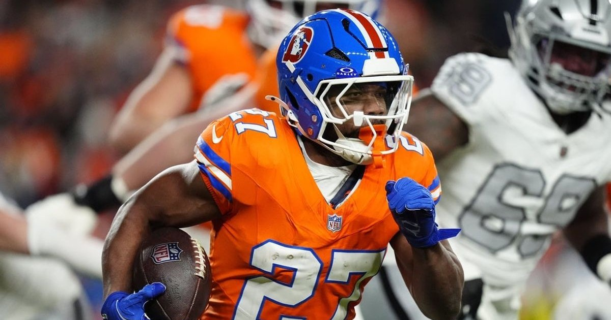

Broncos suspend J.K. Dobbins one game for conduct detrimental — he won't travel to Pittsburgh
Sean Payton announced Tuesday that Denver's veteran running back is suspended for Friday's Black Friday game against the Steelers — one snap on Sunday, then a closed door.

Disclosure: this post contains affiliate links. I earn a commission on qualifying purchases.
The suspension
The Denver Broncos have suspended running back J.K. Dobbins for one game, head coach Sean Payton announced at his Tuesday press conference.
"I'm suspending J.K. Dobbins for this weekend's game," Payton told reporters. "Conduct detrimental. That's all I'm going to say about it. Coach's decision."
He took no follow-up questions. The suspension is Payton's decision, not the league's — a team-imposed ban, and the coach made it clear he is not explaining it further.
Dobbins will miss Friday's Black Friday game against the Pittsburgh Steelers in Week 12, will not practice this week, and will remain away from the team throughout its preparation, according to reports from Denver.
The snap that started it
The ban comes two days after the strangest line of Dobbins' season. In Denver's 38-24 win over the Las Vegas Raiders on Sunday, the veteran played a season-low one offensive snap — a single carry, stuffed for no gain.
The backfield belonged to someone else. Rookie Jonah Coleman handled the bulk of the rushing workload, turning 24 carries into 111 yards and three touchdowns in the same game Dobbins barely touched the field.
Payton would not connect the two things publicly, and the specifics of whatever happened between the coach and the running back remain under wraps. But the sequence is hard to ignore: a healthy veteran goes from starter to one snap, and two days later he is suspended.
It is a sharp turn even by the standards of this backfield. On Monday, Payton told reporters Dobbins was healthy and "going to be super important for what we're doing in this stretch." By Tuesday, he was suspended.
The fall from RB1
Dobbins opened the season as Denver's No. 1 running back, and he earned that role. Last season, when healthy, he was the main man in the Broncos' rushing game, running for 772 yards and four scores across 10 games.
This year the ground has steadily shifted under him. Coleman has taken more and more of the work as the weeks have gone on, and with RJ Harvey on injured reserve, the rookie — not the veteran — is now the feature back. Dobbins is 27, and he has bristled before at being framed as an aging player: after a win over the Cardinals in Week 7, he told reporters, "You keep calling me a vet. I'm not old. I'm 27 years old. Not old. I'm not 30. I'm not even close to 30."
Now the 27-year-old will watch Friday's game from home while the rookie who replaced him carries the backfield into Pittsburgh.
What it means
For Friday, the picture is simple: Coleman leads the Broncos' backfield against the Steelers, with Dobbins sidelined by his own coach's decision. Denver's ground game has already been trending his way for weeks; the suspension just makes it official for a night.
The bigger question is what comes back with Dobbins next week. A one-game, team-imposed suspension for conduct detrimental is a coach sending a message, and Payton sent it in the shortest possible terms. Whether Dobbins returns to a role or returns to the margins will be decided by what happens behind closed doors this week — the part Payton refused to discuss.
Sources
• Sean Payton suspends J.K. Dobbins for Week 12 for conduct detrimental to the team (NBC Sports)
• Broncos suspend RB J.K. Dobbins for one game. Here's why (USA Today)
• JK Dobbins suspended for 'conduct detrimental' in mysterious Broncos decision (New York Post)
• Broncos' J.K. Dobbins: Handed team-imposed one-game ban (theScore)
• J.K. Dobbins Suspended by Broncos for Black Friday NFL Game vs. Steelers (Bleacher Report)
• Broncos coach Sean Payton suspends RB JK Dobbins for conduct 'detrimental to the team' (Fox News)
Gear up: Fanatics